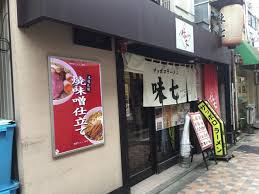
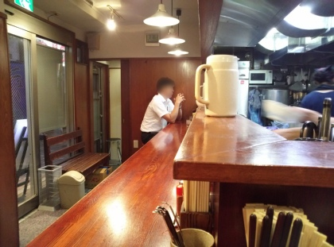
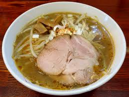
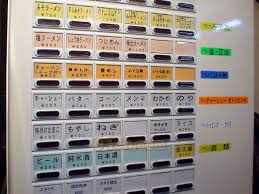

味七

本格札幌ラーメンのお店です。
オリジナルブレンドのみそを中華鍋でひき肉と合わせて炒め、そのあとで野菜を絡めてあります。
生にんにくを入れるとコクがアップしさらにおいしくいただけます。



- 営業時間
月～金：11:30～翌2:00（ラストオーダー 翌1:45）
土、日 ：11:30～22:00（ラストオーダー 21:45） - 座席数：8席
- 予算：～￥1,000
- 駐車場:無し